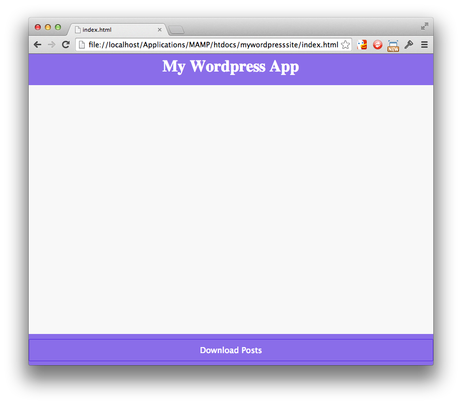
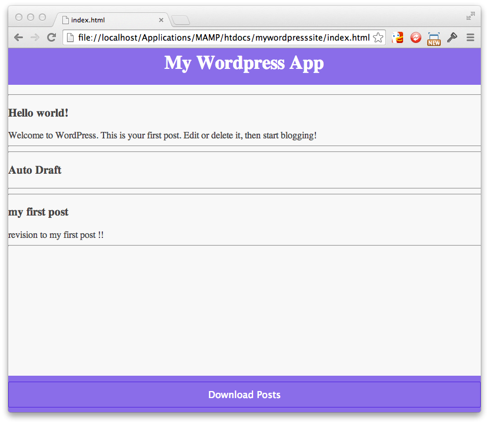

In Part 2 of the tutorial we will be actually coding the App.
We are going to make it so simple, in this first version, it will not even check the timestamp on
posts and so will re-download all posts every time (adding timestamp checking logic is left as an
exercise for the student - Hint: checkout the datasync.setLastUpdated() function)
We are going for a no frills layout here;
First we will get rid of the aside div as we won't use the side menu.
We will add a button at the bottom to fetch the posts, and a list in the middle where they will be shown.
Lets update index.html again to represent that:
(Note that the classes used below are what boilerplate uses for its styling, and the id's we will use in our JS code later)
<!DOCTYPE > <html> <head> <as before, not duplicated here for the sake of brevity> </head> <body> <div id="header" class="royal"> <h1>My Wordpress App</h1> </div> <div id="main" class="white"> <ul class="white" id="post_list"> </ul> </div> <div id="footer" class="royal"> <button class="button royal" id="dl_button">Download Posts</button> </div> </body> </html>
It should look like this in the browser :

This is where datasync does it's work.
Add all the following code to <script> tags in the header of index.html
The data is fetched from the server is a single function call:
$(document).ready( function() {
$('#dl_button').click( function() {
datasync.fetchFromServer('wp_posts','', listsPosts, displayError);
});
});
We need to code the success function, which we will call listPosts():
function listPosts() {
$('#post_list').html('');
mydb.thedb['wp_posts'].forEach( function(post) {
$('#post_list').append('
function displayError(err) {
alert(JSON.stringify(err));
}
We also add this line (into $(document).ready()) so that the local database posts are listed when the app starts:
$(document).on('datasync_ready', listPosts ); // this loads all local posts at startup
At this point our index.html should look like this :
<html> <head< </head> <body>My Wordpress App
</body> </html>
And after you click the "Download Posts" button your app should look something like this :
And if you go and add a Wordpress post and then click the Download Posts button again, the new posts will appear.